結構學 SA ｜ 命題大綱 U1-2 靜定結構之分析 ｜ 影片講義
位移計算與非外力成因
影片 8:32 ・ 6 章 ・ 21 段 ・ 例題⑤ 共軛梁法、例題⑥ 廣義虛功式四成因疊加
靜定結構的內力只靠幾何＋平衡；到了位移側剛度才登場。最大位移在 V* = 0 的地方；支承沉陷走左邊，不要寫進 e 裡面。
0開場：從內力跨到位移
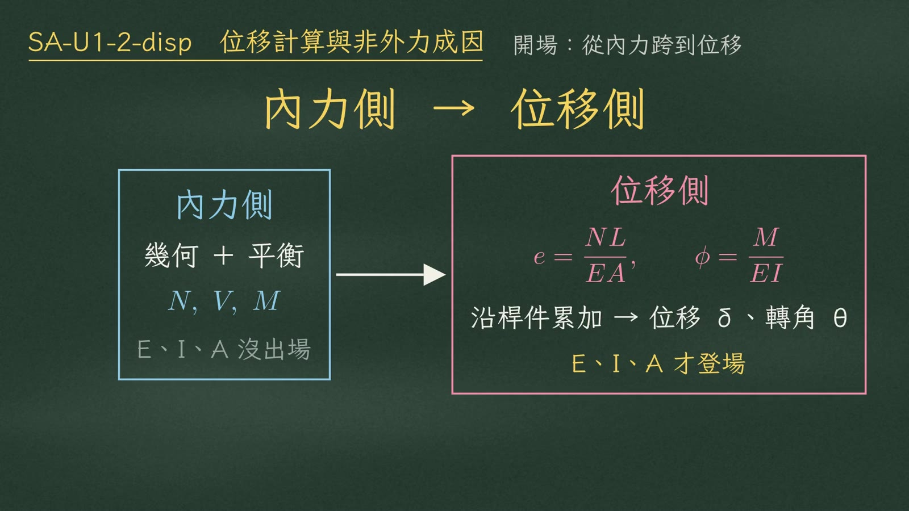
內力側（幾何＋平衡，E、I、A 沒出場）→ 位移側（e = NL/EA、φ = M/EI，沿桿件累加）影片 0:24
這一集講位移計算，以及非外力成因。靜定結構的內力，只靠幾何跟平衡就算得出來，\(E\)、\(I\)、\(A\) 完全沒出場。
到了位移側，剛度才正式登場：把已經解出的內力，換成桿件伸長 \(NL/EA\)，或曲率 \(M/EI\)，再沿著桿件累加，就得到位移跟轉角。
$$e=\frac{NL}{EA},\qquad \phi=\frac{M}{EI}\quad\xrightarrow{\ \text{沿桿件累加}\ }\quad \delta,\ \theta$$
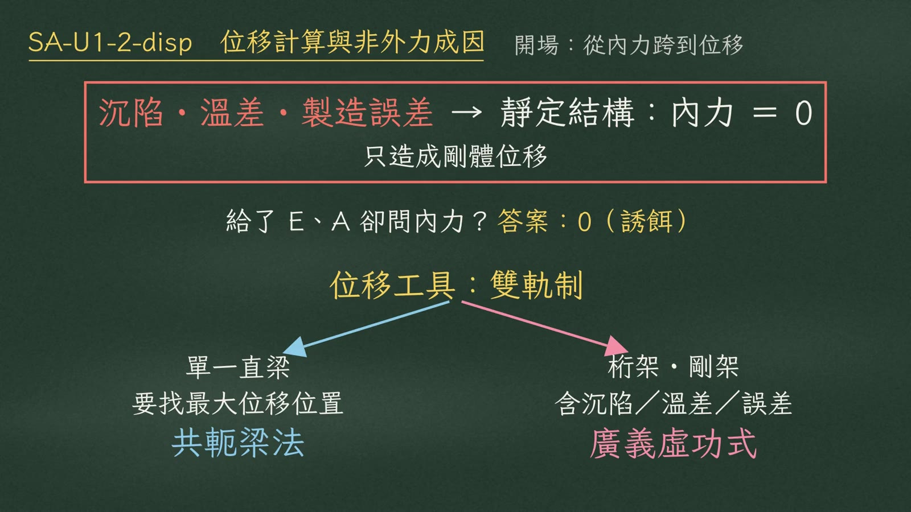
非外力成因在靜定結構內力 = 0（誘餌題）；位移工具雙軌制影片 0:57
由此有一個重要推論：支承沉陷、溫差、製造誤差，都不經由內力產生變形，所以在靜定結構裡，不生一絲內力，只造成剛體位移。
誘餌題題目給了 \(E\) 跟 \(A\)，卻問靜定結構在沉陷或溫差下的內力——答案直接是 0。
位移工具採雙軌制：
| 情況 | 工具 |
|---|
| 單一直梁、要找最大位移的位置 | 共軛梁法 |
| 桁架、剛架，或含非外力成因（沉陷／溫差／誤差） | 廣義虛功式（一律） |
1共軛梁法：把 M/EI 當載重
先看共軛梁法。把真實梁的彎矩圖除以 \(EI\)，當成分布載重 \(w^*\)，加在共軛梁上，然後就只是算剪力跟彎矩。
$$w^*=\frac{M}{EI}\qquad {\color{#2b6f9e}\theta=V^*}\ \ (\text{轉角}=\text{共軛梁剪力})\qquad {\color{#c0446a}y=M^*}\ \ (\text{位移}=\text{共軛梁彎矩})$$
黑板用色：藍＝轉角／剪力、粉紅＝位移／彎矩。
共軛梁的剪力 \(V^*\)，就是真實梁的轉角；共軛梁的彎矩 \(M^*\)，就是真實梁的位移。微積分問題，變成大家最熟的靜力學。
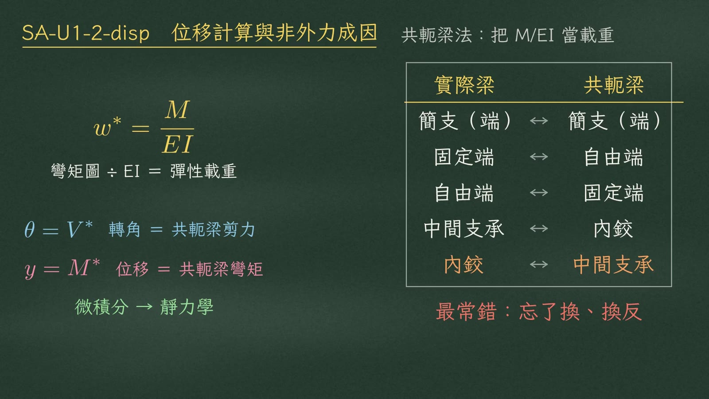
θ = V*、y = M*，右側支承對偶轉換表影片 1:40
支承要做對偶轉換：
| 實際梁 | 共軛梁 |
|---|
| 簡支（端） | 簡支（端） |
| 固定端 | 自由端 |
| 自由端 | 固定端 |
| 中間支承 | 內鉸 |
| 內鉸 | 中間支承 |
考場最常錯忘了換，或換反。
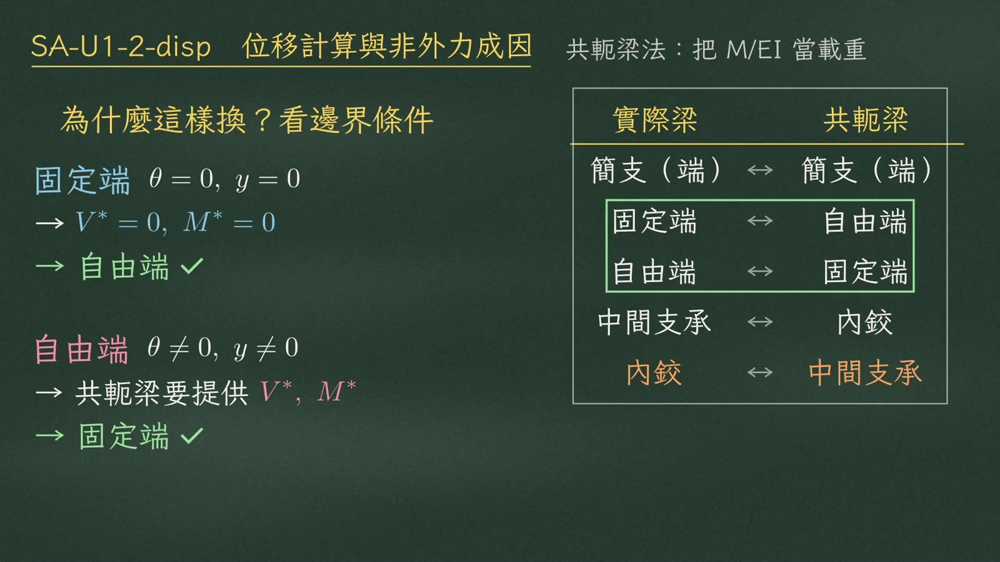
為什麼這樣換？看邊界條件（固定端 ↔ 自由端）影片 2:03
為什麼這樣換？看邊界條件。
| 實際梁 | 邊界條件 | 共軛梁需要 | → 換成 |
|---|
| 固定端 | \(\theta=0,\ y=0\) | \(V^*=0,\ M^*=0\) | 自由端 ✓ |
| 自由端 | \(\theta\neq0,\ y\neq0\) | 要提供 \(V^*\)、\(M^*\) | 固定端 ✓ |
固定端的轉角跟位移都是零，所以共軛梁那一點的 \(V^*\) 跟 \(M^*\) 也必須是零，那正是自由端。反過來，自由端的轉角跟位移都可以不為零，共軛梁就必須提供剪力跟彎矩，所以要換成固定端。
2例題⑤：端點轉角與最大位移
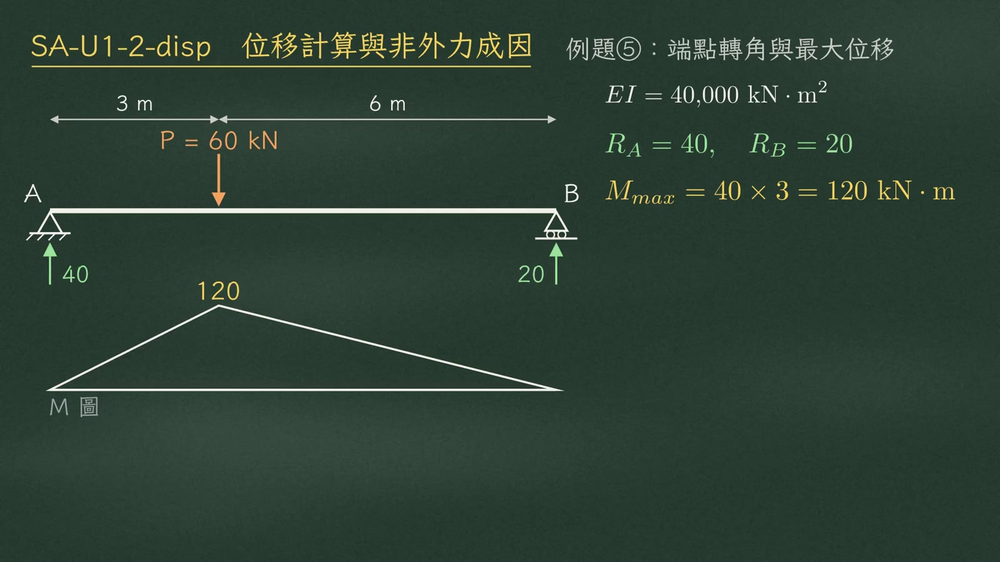
簡支梁 9 m，P = 60 kN 距 A 3 m；反力 40、20；三角形 M 圖峰值 120影片 2:26
例題五：簡支梁跨度 9 m，距 A 點 3 m 處有一個 60 kN 的集中載重，\(EI=40{,}000\ \text{kN}\cdot\text{m}^2\)。
第一步畫真實梁的彎矩圖：反力 \(R_A=40\)、\(R_B=20\)；彎矩圖是三角形，尖峰在載重點：
$$M_{max}=40\times3=120\ \text{kN}\cdot\text{m}$$
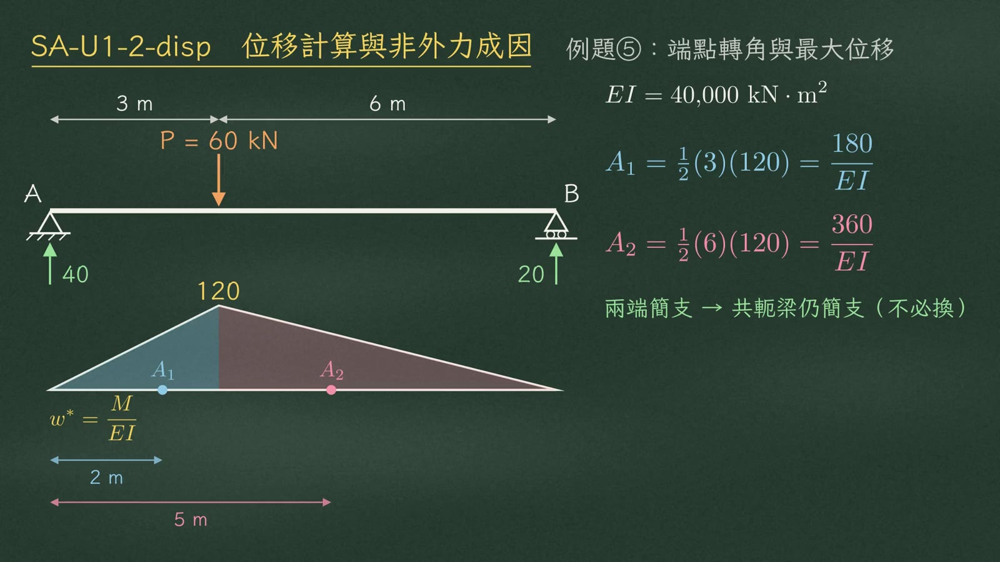
M/EI 圖拆成 A₁（形心距 A 2 m）與 A₂（形心距 A 5 m）影片 2:49
把三角形拆成左右兩塊，當作彈性載重：
$${\color{#2b6f9e}A_1=\tfrac12(3)(120)=\frac{180}{EI}}\ \ (\text{形心距 A 2 m})$$
$${\color{#c0446a}A_2=\tfrac12(6)(120)=\frac{360}{EI}}\ \ (\text{形心距 A 5 m})$$
支承兩端簡支，共軛梁仍然是兩端簡支，支承不用換。
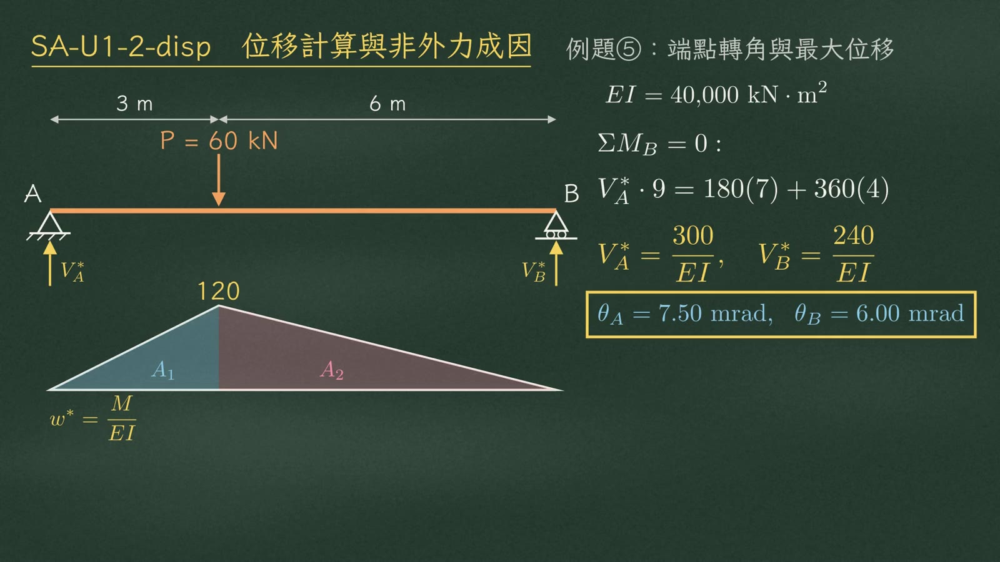
ΣMB = 0 求共軛梁反力 → 端點轉角影片 3:08
對 B 點取矩：
$$V^*_A\cdot 9=180(7)+360(4)\ \Rightarrow\ V^*_A=\frac{300}{EI},\qquad V^*_B=\frac{240}{EI}$$
除以 40,000，A 端轉角是 7.5 mrad，B 端是 6.0 mrad：
$$\theta_A=7.50\ \text{mrad},\qquad \theta_B=6.00\ \text{mrad}$$
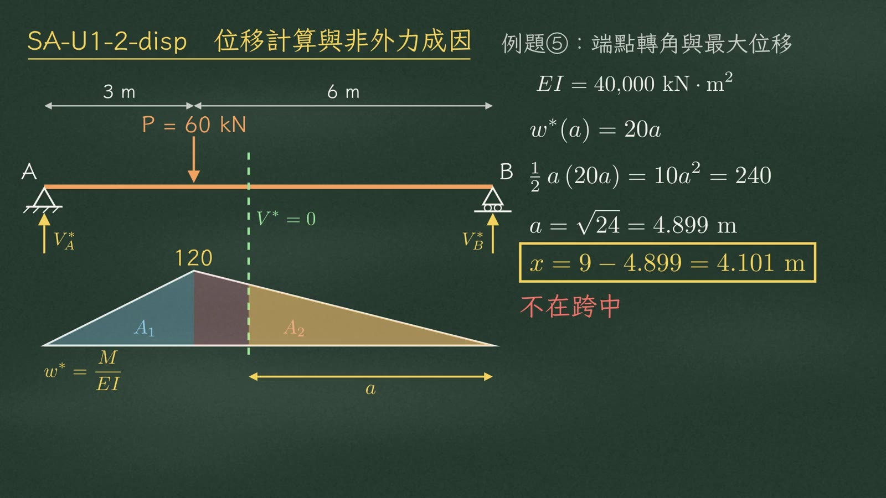
共軛梁 V* = 0（綠虛線）處即最大位移位置；由 B 端量 a影片 3:34
最大位移在哪裡？在共軛梁剪力等於零的地方。從 B 端往左看比較快：距 B 為 \(a\) 處的彈性載重是 \(20a\)，累積面積是 \(10a^2\)，令它等於 \(V^*_B=240\)：
$$w^*(a)=20a,\qquad \tfrac12\,a\,(20a)=10a^2=240\ \Rightarrow\ a=\sqrt{24}=4.899\ \text{m}$$
$$x=9-4.899=4.101\ \text{m}$$
注意換回距 A，\(x=4.101\) m，不在跨中。
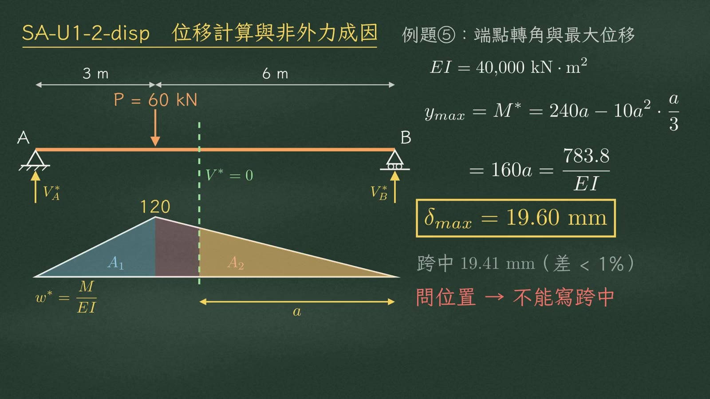
ymax = M* = 160a → δmax = 19.60 mm；跨中 19.41 mm影片 4:01
最大位移等於該點的 \(M^*\)：\(240a\) 減掉三角形載重 \(10a^2\) 乘 \(a/3\)，剛好化簡成 \(160a\)：
$$y_{max}=M^*=240a-10a^2\cdot\frac a3=160a=\frac{783.8}{EI}\ \Rightarrow\ \delta_{max}=19.60\ \text{mm}$$
估算 vs. 問位置跨中位移是 19.41 mm，只差不到 1%，可以拿來估算；但題目問位置，就不能偷懶寫跨中。
3廣義虛功式：四個成因
第二個工具，廣義虛功式：
$$1\cdot\Delta+\Sigma\bar R_j\,\Delta_j=\Sigma\bar n_i\,e_i$$
左邊是虛擬力系做的外功：要求的位移，加上虛擬反力乘真實的支承移動。右邊是虛擬桿力，乘上真實的桿件伸長量。
| 項 | 意義 |
|---|
| \(1\cdot\Delta\) | 要求的位移 |
| \(\Sigma\bar R_j\Delta_j\) | 虛擬反力 × 真實支承移動 |
| \(\Sigma\bar n_i e_i\) | 虛擬桿力 × 真實伸長 |
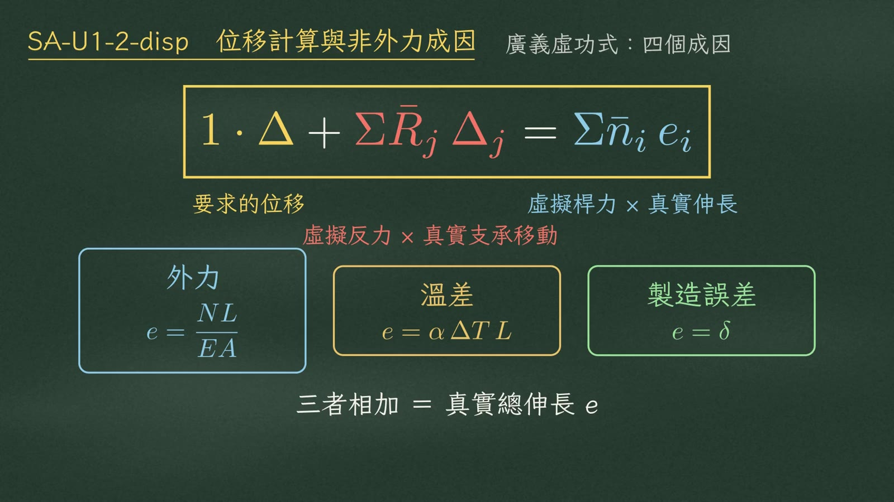
右邊 e 的三來源：外力（藍）、溫差（黃）、製造誤差（綠）影片 4:36
右邊的真實伸長 \(e\)，有三個來源，三者相加才是總伸長：
| 來源 | 伸長 \(e\) |
|---|
| 外力 | \(e=\dfrac{NL}{EA}\) |
| 溫差 | \(e=\alpha\,\Delta T\,L\) |
| 製造誤差 | \(e=\delta\)（題目直接給） |
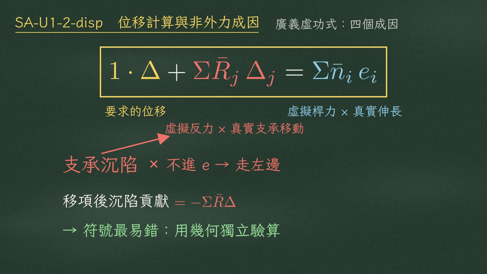
支承沉陷 ✗ 不進 e → 走左邊 ΣR̄Δ；移項後 −ΣR̄Δ影片 4:55
考場最高頻陷阱支承沉陷不屬於這三個，它不進 \(e\)，而是走左邊的 \(\Sigma\bar R\Delta\)。移項之後，沉陷的貢獻是 \(-\Sigma\bar R\Delta\)。
驗算符號最容易錯，所以一定要用幾何獨立驗算一次。
4例題⑥：四成因疊加
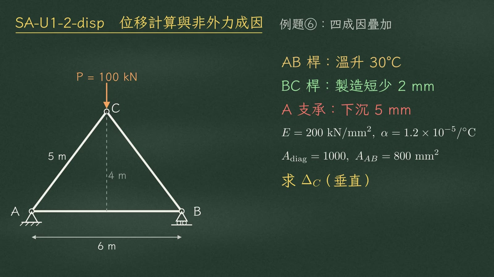
三角桁架 A 鉸、B 滾，跨 6 m、高 4 m、斜桿 5 m；P = 100 kN↓ @ C，三個非外力成因影片 5:20
例題六：三角形桁架，A 鉸支、B 滾支，相距 6 m，頂點 C 高 4 m，所以斜桿長 5 m。C 點受 100 kN 向下。另外三個非外力成因，求 C 點的垂直位移 \(\Delta_C\)：
| 條件 | 內容 |
|---|
| 外力 | \(P=100\) kN ↓ @ C |
| 溫差 | AB 桿溫升 30°C，\(\alpha=1.2\times10^{-5}\)/°C |
| 製造誤差 | BC 桿製造時短少 2 mm |
| 支承沉陷 | A 支承下沉 5 mm |
| 材料・斷面 | \(E=200\ \text{kN/mm}^2\)；\(A_{diag}=1000\)、\(A_{AB}=800\ \text{mm}^2\) |
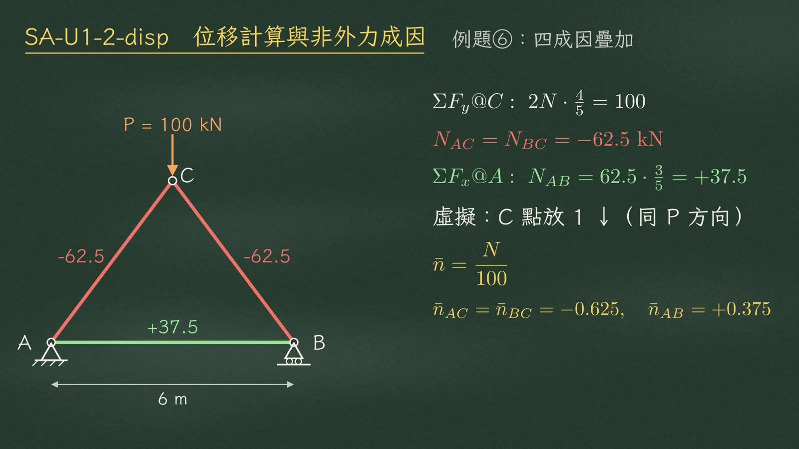
真實桿力：斜桿 −62.5（紅，受壓）、AB +37.5（綠，受拉）；n̄ = N/100影片 5:49
先求真實桿力。節點 C 垂直平衡，兩根斜桿各負擔 50 的垂直分量，斜率 4 比 5，所以斜桿是 −62.5，受壓；節點 A 水平平衡，AB 等於 37.5，受拉。
$$\Sigma F_y@C:\ 2N\cdot\tfrac45=100\ \Rightarrow\ {\color{#b8382b}N_{AC}=N_{BC}=-62.5\ \text{kN}}$$
$$\Sigma F_x@A:\ {\color{#2f7d45}N_{AB}=62.5\cdot\tfrac35=+37.5}$$
虛擬系統是在 C 點放一單位向下的力，方向跟原載重相同，所以虛擬桿力就是真實桿力除以 100：
$$\bar n=\frac{N}{100}:\qquad \bar n_{AC}=\bar n_{BC}=-0.625,\quad \bar n_{AB}=+0.375$$
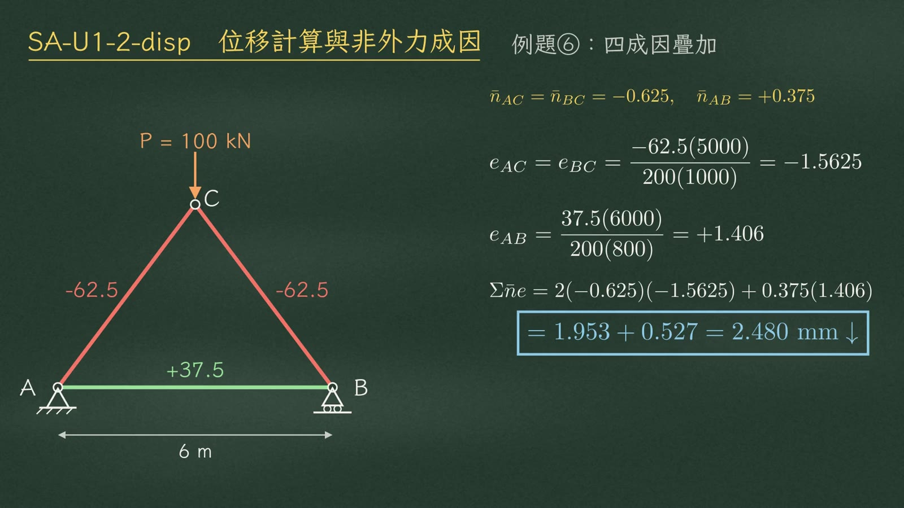
外力項：Σn̄e = 1.953 + 0.527 = 2.480 mm↓影片 6:11
外力項。斜桿伸長等於 −62.5 乘 5000，除以 200 乘 1000，是 −1.5625 mm；下弦伸長 1.406 mm。乘上虛擬桿力加總：兩根斜桿貢獻 1.953，下弦 0.527，合計 2.480 mm，向下。
$$e_{AC}=e_{BC}=\frac{-62.5(5000)}{200(1000)}=-1.5625,\qquad e_{AB}=\frac{37.5(6000)}{200(800)}=+1.406$$
$$\Sigma\bar n e=2(-0.625)(-1.5625)+0.375(1.406)=1.953+0.527=2.480\ \text{mm}\downarrow$$
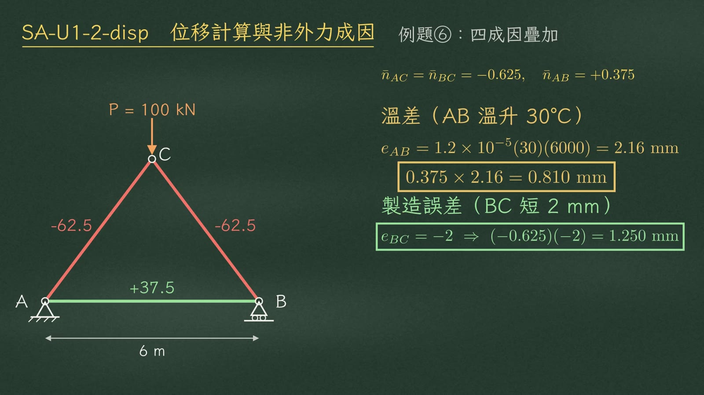
溫差項 0.810 mm（黃框）、製造誤差項 1.250 mm（綠框）影片 6:36
溫差項。AB 溫升 30°C，熱膨脹係數 \(1.2\times10^{-5}\)/°C，桿長 6000 mm，伸長 2.16 mm，乘 0.375，得 0.810 mm。
$$e_{AB}=1.2\times10^{-5}(30)(6000)=2.16\ \text{mm}\ \Rightarrow\ 0.375\times2.16=0.810\ \text{mm}$$
製造誤差項。BC 短了 2 mm，\(e\) 是 −2，乘 −0.625，負負得正，1.250 mm。
$$e_{BC}=-2\ \Rightarrow\ (-0.625)(-2)=1.250\ \text{mm}$$
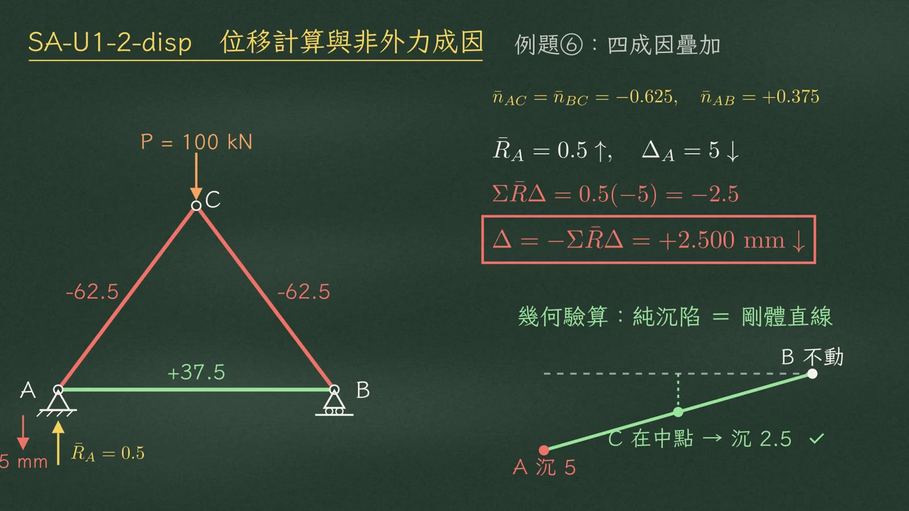
沉陷項 +2.500 mm；右下剛體直線驗算：A 沉 5、B 不動 → C 在中點沉 2.5 ✓影片 7:02
沉陷項。C 點單位力讓 A 的虛擬反力是 0.5，向上；A 卻向下沉 5 mm，方向相反，\(\Sigma\bar R\Delta\) 是 −2.5，移項後得 +2.5 mm。
$$\bar R_A=0.5\uparrow,\quad \Delta_A=5\downarrow\ \Rightarrow\ \Sigma\bar R\Delta=0.5(-5)=-2.5$$
$$\Rightarrow\ \Delta=-\Sigma\bar R\Delta=+2.500\ \text{mm}\downarrow$$
幾何驗算純沉陷是一條剛體直線，A 沉 5、B 不動，C 在水平中點，剛好沉一半，2.5 mm，符號正確。
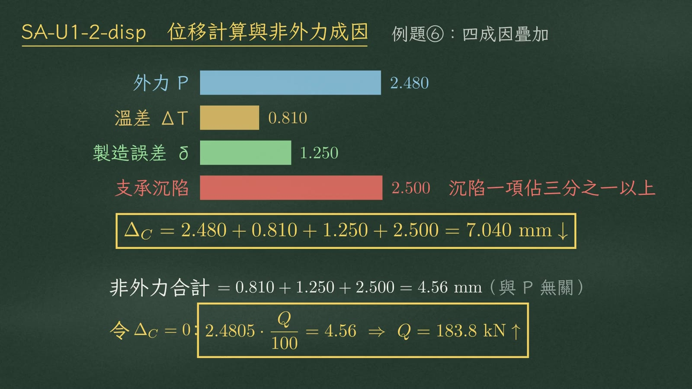
四成因長條：2.480／0.810／1.250／2.500 → ΔC = 7.040 mm↓；反解 Q = 183.8 kN↑影片 7:34
四項疊加：
| 成因 | 貢獻（mm↓） |
|---|
| 外力 P | 2.480 |
| 溫差 ΔT | 0.810 |
| 製造誤差 δ | 1.250 |
| 支承沉陷 | 2.500 |
| 合計 \(\Delta_C\) | 7.040 ↓ |
|---|
$$\Delta_C=2.480+0.810+1.250+2.500=7.040\ \text{mm}\downarrow$$
沉陷一項就佔了三分之一以上。
如果要讓 C 點位移等於零呢？非外力成因合計 4.56 mm，跟載重無關；令向上的載重 \(Q\) 抵消它：
$$0.810+1.250+2.500=4.56\ \text{mm}\ (\text{與 P 無關})$$
$$\text{令}\ \Delta_C=0:\quad 2.4805\cdot\frac{Q}{100}=4.56\ \Rightarrow\ Q=183.8\ \text{kN}\uparrow$$
5考場四步 SOP
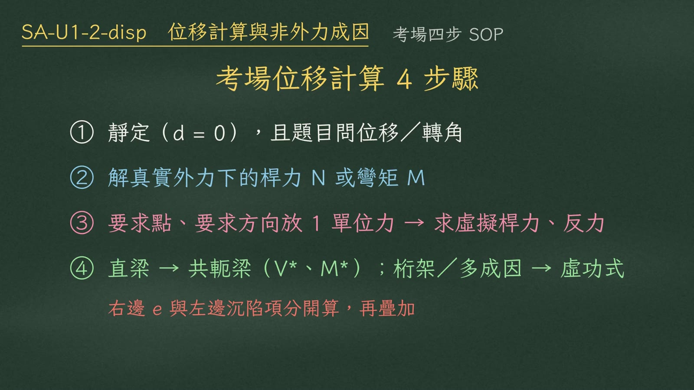
考場位移計算 4 步驟影片 8:07
- 確認靜定（\(d=0\)），而且題目問的是位移或轉角。
- 解出真實外力下的桿力 \(N\) 或彎矩 \(M\)。
- 在要求位移的點、沿要求的方向，放一單位力，求虛擬桿力與虛擬反力。
- 選公式：直梁用共軛梁法，算 \(V^*\) 跟 \(M^*\)；桁架或多成因用廣義虛功式，右邊的 \(e\) 跟左邊的沉陷項分開算，再疊加。
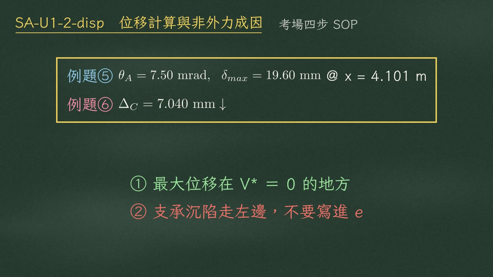
本集答案與兩句話影片 8:31
| 例題 | 答案 |
|---|
| 例題⑤ | \(\theta_A=7.50\) mrad；\(\delta_{max}=19.60\) mm，發生在距 A \(x=4.101\) m |
| 例題⑥ | \(\Delta_C=7.040\) mm ↓ |
記住兩句話① 最大位移在 \(V^*=0\) 的地方。 ② 支承沉陷走左邊，不要寫進 \(e\) 裡面。